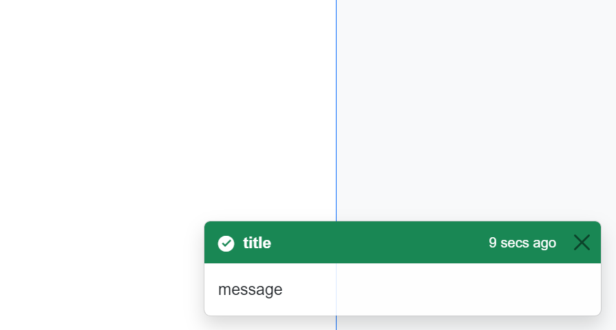

AlertDialog
The AlertDialog class provides a notification mechanism in application in form of toasts.

In-app usage
Alerts dialogs can be simply called anywhere from application by injecting IAlertDialogService and calling AddAlertDialog(type, title, message, time) method.
Note
IAlertDialogService is a scoped service, therefore alerts are unique to each client and are not synchronized.
- Make sure your Blazor application references
axopen_core_blazorproject and AxoCore services are added to builder inProgram.csfile.
builder.Services.AddAxoCoreServices();
- Add
AxoAlertToastinstance toMainLayout.razorfile.
@using AXOpen.Core.Blazor.AxoAlertDialog
<div class="page">
<main>
<TopRow />
<article class="content px-4">
@Body
</article>
</main>
<NavMenu />
<AxoAlertToast/>
</div>
- Inject
IAlertDialogServiceinto you Blazor component
@inject IAlertDialogService _alerts
- Invoke notification toast from your Blazor view
_alertDialogService.AddAlertDialog(type, title, message, time);
Where:
- type:
eAlertDialogTypeenum representing visualization type:- Undefined
- Info
- Success
- Danger
- Warning
- title: Refers to the header of alert
- message: Corresponds to the message
- time: Specifies the duration in seconds for which the alert will be displayed
Invoking alerts from PLC
Alerts can be invoked from PLC similarly like AxoDialog, however there is no need for user interaction.
VAR PUBLIC
_alertDialog : AXOpen.Core.AxoAlertDialog;
END_VAR
//...
IF(_alertDialog.Show(THIS)
.WithTitle('Plc alert')
.WithType(eDialogType#Success)
.WithMessage('This is alert invoked from plc!')
.WithTimeToBurn(UINT#5).IsShown() = true) THEN
//when task is done, move next
THIS.MoveNext();
END_IF;
Note
Alerts invoked from PLC are synchronized across clients.
Make sure your Blazor application references
axopen_core_blazorproject and AxoCore services are added to builder inProgram.csfile.Make sure your
MainLayout.razorfile contains instance of<AxoAlertToast/>component.Add
AxoAlertDialogLocatorwith provided list of observed objects to your view. You can add it either to:MainLayout.razorfile, where in consequence alerts will be displayed and synchronized across whole application.- Your own razor file, where alerts will be synchronized across multiple clients but only displayed within that specific razor page.
Note
Make sure, that exist only one instance of AxoAlertDialogLocator either in MainLayout.razor or in your own page.
<AxoAlertDialogLocator ObservedObjects="new[] {Entry.Plc.Context.PneumaticManipulator}"/>